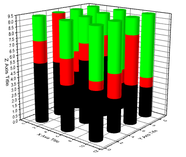
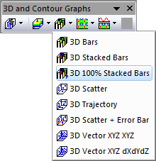

Gestapeltes 3D-Balkendiagramm, 100%
3D-100PC-Stacked-Bars
- 
Datenanforderungen
-
- Wählen Sie mindestens eine Z-Spalte aus (oder einen Bereich aus mindestens einer Z-Spalte). Falls die Z-Spalte verbundene XY-Spalten besitzt, werden die XY-Spalten verwendet; ansonsten werden die XY-Standardwerte des Arbeitsblatts verwendet.
-
oder
oder
- Matrix: Ein Matrix der Z-Werte mit mindestens einem Objekt
Diagramm erstellen
Aktivieren Sie das Matrixblatt oder wählen Sie die gewünschten Daten im Arbeitsblatt aus.
Wählen Sie im Menü .
oder
Klicken Sie auf die Schaltfläche Gestapelte 3D-Balken, 100% auf der Symbolleiste 3D- und Konturdiagramme.
- 
Vorlage
- gl3DStackBarP.OTP (OpenGL)
(installiert im Origin-Programmordner)
Hinweise
- Die Z-Werte bestimmen die Höhe der Spalten (Balken). Die Säulen/Balken können farblich auf die Z-Werte abgebildet werden.
- Die verbundenen X- und Y-Werte, die in der Matrix/im Arbeitsblatt abgebildet sind, legen die XY-Koordinaten jeder Spalte fest.
- Bei XYZ-Daten werden die Z-Werte bei den gleichen X- und Y-Koordinaten in Z-Richtung gestapelt; für Matrixdaten werden alle Objekte im aktuellen Matrixblatt gestapelt.
- Wenn Sie ein gestapeltes 3D-Balkendiagramm aus virtuellen Matrizen erstellen möchten, müssen Sie zuerst ein allgemeines 3D-Balkendiagramm aus einer ausgewählten virtuellen Matrix erzeugen. Fügen Sie dann weitere virtuelle Matrizen zu diesem Diagramm hinzu und gruppieren Sie sie im Dialog Layerinhalt. Bitte beachten Sie, dass die nachfolgenden virtuellen Matrizen m Voraus mit der X-Funktion w2vm erstellt werden müssen.
|
Dieser Diagrammtyp kann auch aus einem gestapelten 3D-Balkendiagramm erstellt werden, indem das Kontrollkästchen Für kumulierte Häufigkeit auf Prozent normieren auf der Registerkarte Stapeln des Dialogs Details Zeichnung - Layereigenschaften aktiviert wird.
|